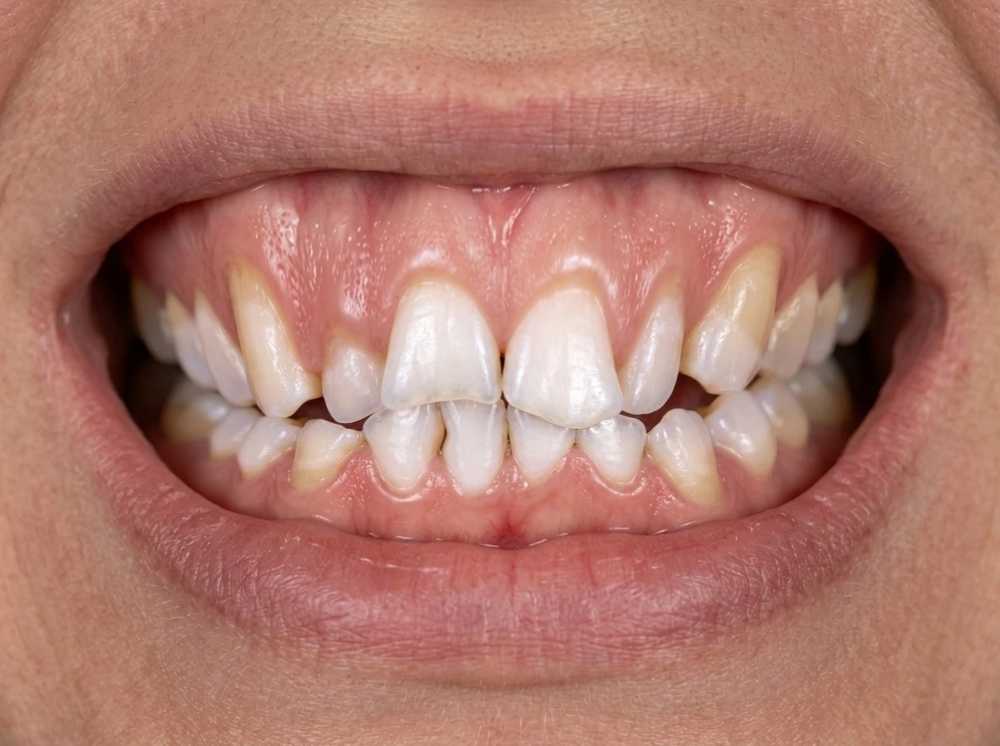

Every patient's teeth and oral anatomy are distinct. At Tooth Fairy Dental Clinic in Perambur, Dr. Tamanna evaluates your dental health thoroughly before advising any treatment plan. Below are key treatment areas supported by our practice capabilities and patient feedback.
01Endodontic Therapy
Root Canal Treatment
When deep dental decay or trauma reaches the nerve and pulp inside a tooth, severe ache and sensitivity can develop. Root canal treatment is a conservative procedure focused on clearing out the inflamed or infected pulp, disinfecting the internal root canals, and sealing the space to prevent re-infection.
Instead of extracting the tooth, root canal therapy preserves your natural root system, maintaining normal jaw structure and bite balance. Patients at Tooth Fairy Dental Clinic frequently remark on the clear explanations given before and during the procedure, which help eliminate anxiety.
When might you enquire about this?
Persistent throbbing toothache, acute sensitivity to hot or cold that lingers, pain when chewing, or localized tenderness in the surrounding gum tissue.
Tooth crowding, excessive gaps, rotated teeth, and misaligned bites not only affect smile aesthetics, but also make everyday brushing and flossing significantly harder. Orthodontic treatment applies measured, gentle forces over time to guide teeth into a balanced, functional arch.
At Tooth Fairy Dental Clinic, patients receive continuous, attentive support from Dr. Tamanna and her team through every adjustment visit, tracking progression and ensuring comfort throughout the alignment timeline.
VISUAL TRANSFORMATION
Before & After Orthodontic Arch Alignment
Drag the slider to observe how crowded, misaligned teeth move into a straight, healthy arch line.

Before TreatmentAfter Treatment
Slide horizontally to see the alignment progression
A dental crown is a custom-crafted protective cap that encases a damaged or structurally vulnerable tooth. Following endodontic therapy (root canal), the natural tooth structure often requires reinforcement to withstand routine chewing forces without fracturing.
During your consultation, Dr. Tamanna explains the material options, custom shade matching, and fitting steps, ensuring the restored tooth aligns comfortably with opposing teeth and feels natural.
Clinical assessment note
Crown suitability and choice of material depend on the remaining tooth structure, location in the mouth (front vs. molar), and bite dynamics.
An impacted tooth occurs when a tooth—most commonly a third molar (wisdom tooth)—fails to erupt properly due to insufficient jaw space or improper angle of emergence. When impacted teeth push against adjacent molars or trap food debris under swollen gums, they cause repeated pain, swelling, and risk of localized infection.
Minor oral surgical procedures for impacted teeth at Tooth Fairy Dental Clinic are performed with high clinical precision, thorough local anaesthesia, and dedicated measures to keep patients calm, supported, and relaxed. Patient reviews specifically praise Dr. Tamanna’s gentle hand and patience during impacted tooth removals.
Clear, practical answers about scheduling, clinical consultations, and visiting the clinic.
How do I arrange a dental consultation with Dr. Tamanna?
You can contact the clinic directly by phone at +91 96000 21777 or +91 4425580832 during our working hours (10:00 AM to 8:00 PM, Monday through Saturday). You may also submit an enquiry through our Contact page.
Is consultation available on Sundays?
Sunday consultations are arranged strictly by appointment. Please call the clinic ahead of time to confirm Dr. Tamanna's availability and schedule an appointment before visiting on a Sunday.
Where is Tooth Fairy Dental Clinic located in Perambur?
The clinic is located at 266, Paper Mills Road, Opposite Ajantha Baker, Neelam Garden, Bunder Garden, Perambur, Chennai, Tamil Nadu 600011. It is easily accessible from Paper Mills Road with visible street-level signage.
What should I expect during my first dental visit?
Your initial visit focuses on an in-person clinical assessment. Dr. Tamanna examines your teeth, gums, and bite, listens to any concerns or symptoms you have, and provides clear explanations of your treatment options before any procedure is scheduled.
What if I have an urgent toothache or dental swelling?
If you are suffering from acute toothache or sudden swelling, please telephone the clinic immediately at +91 96000 21777 so we can arrange prompt attention during operating hours.
SPEAK WITH THE PRACTICE
Have questions regarding a specific dental concern?
Call our Perambur clinic to speak with our reception or book your initial consultation with Dr. Tamanna.